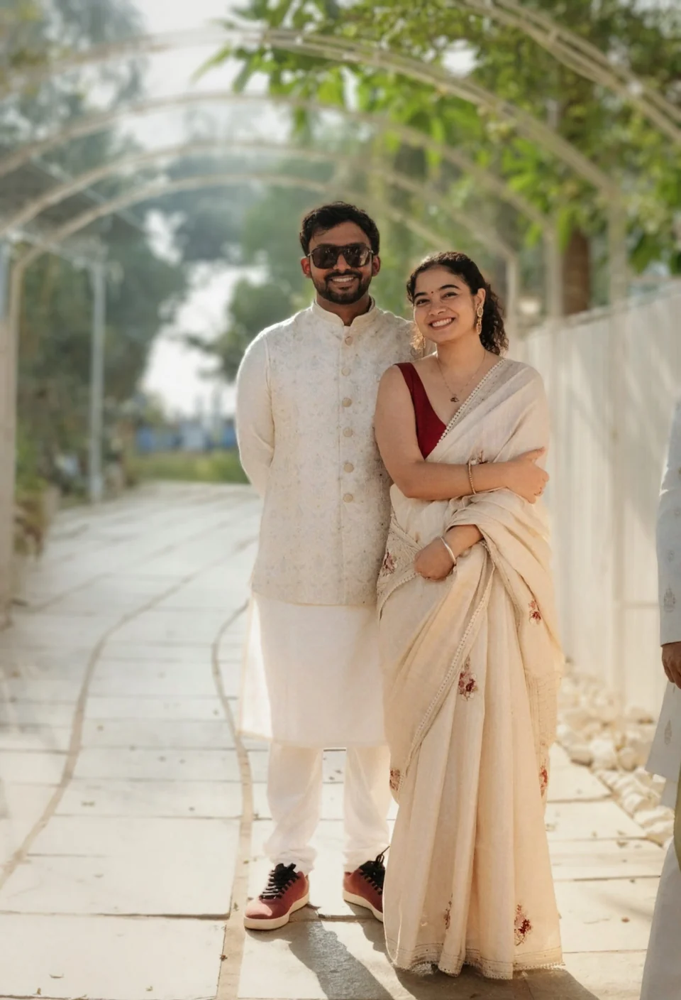
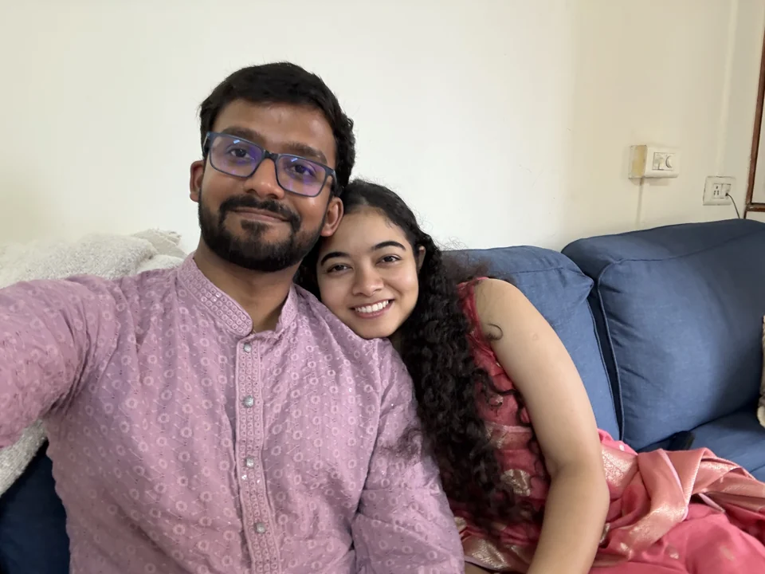
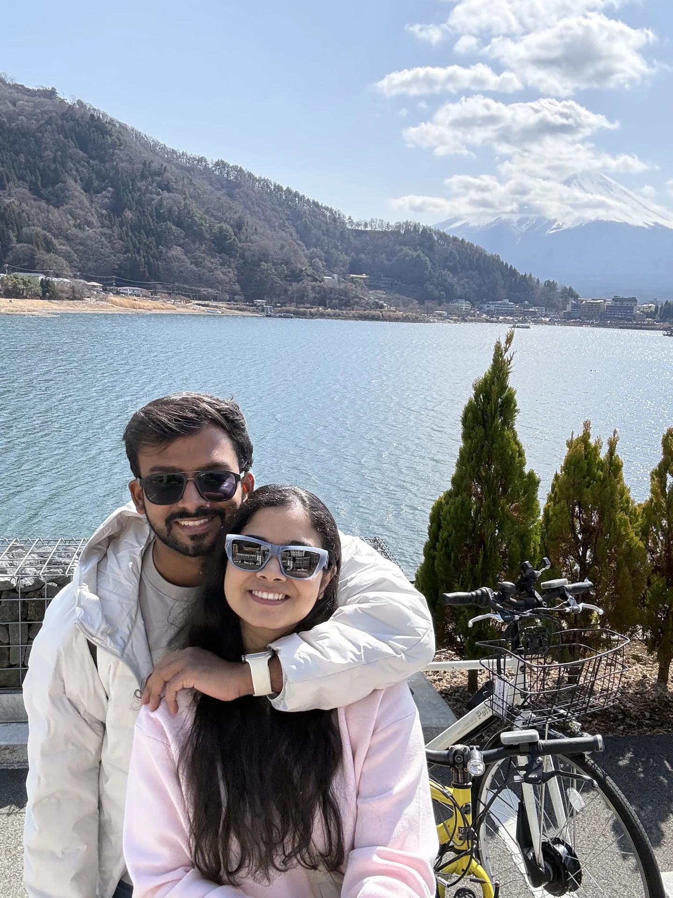
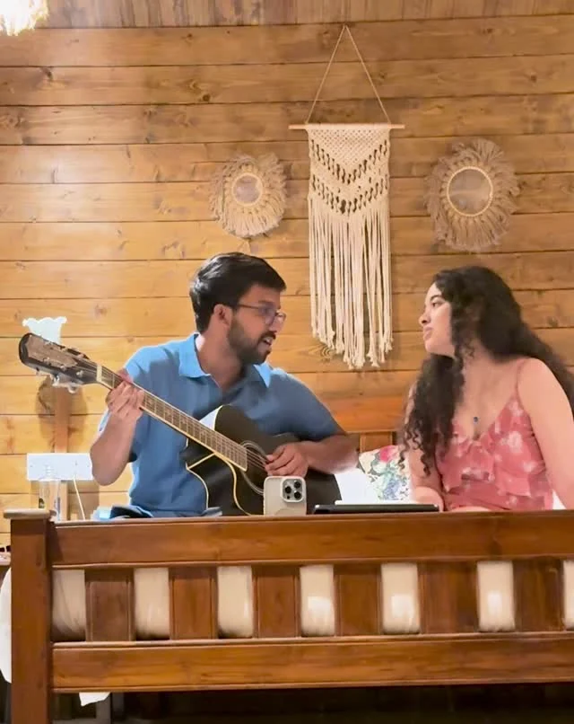
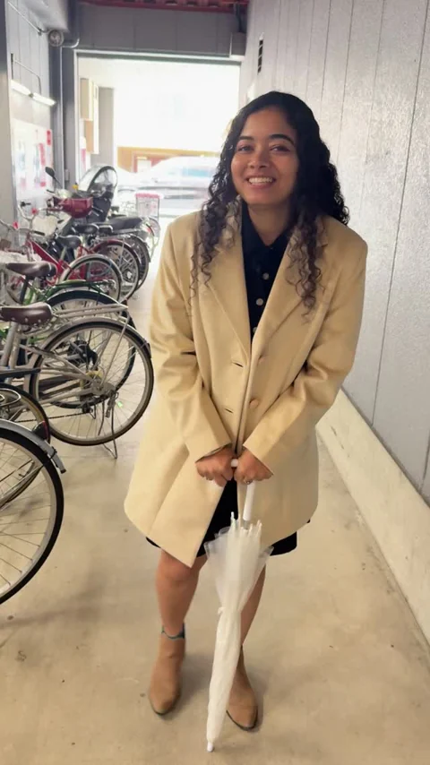
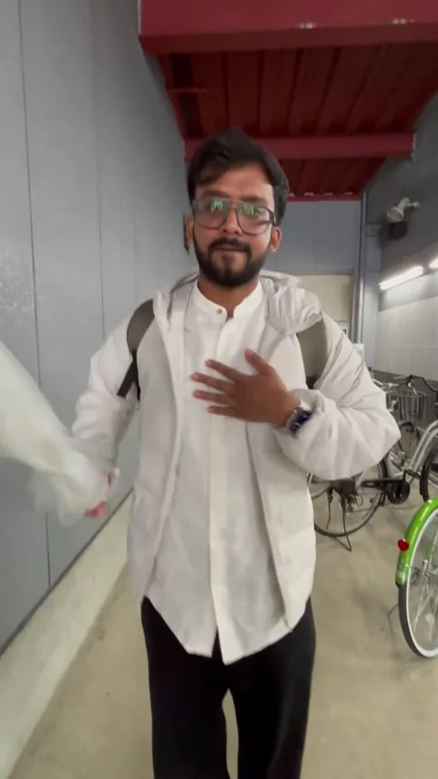
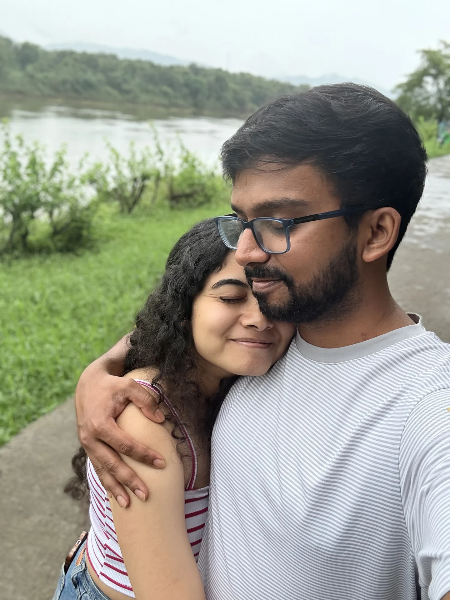

Thursday
25
February 2027
Mehendi
A little colour.
A close-family beginning.
For close family
Together with our families
We’re getting married.
25 — 27 February 2027
The Ummed · Ahmedabad

A wedding. A beginning. A lifetime of little things.
Some stories begin long before
you know they’re your story.
01 · A little before forever
We liked each other back when school uniforms were our everyday outfits. It took us a little longer to realise we belonged together.
Even then, there were songs written for her, songs sung to her, and little recordings sent her way.
We just didn’t know how much story was still ahead.
02 · We kept talking
Through the years, we stayed in touch. WhatsApp conversations, video calls, and a fondness that stayed with us.
Then we met again in Mumbai. Sidharth was recovering from a broken leg, and Kalyani held his hand as they walked along Marine Drive.
We had always liked each other. In Mumbai, that feeling began to become a life together.
Sometimes, a beginning is simply a hand to hold.

From that walk in Mumbai
to a life shared across two cities.
03 · Two cities, one shared life
San Francisco and Mumbai. Calls between the everyday things.
And whenever we’re together, a little more life to share.
Mumbai
always connected
San Francisco

The best part of any place is being there together.

04 · The songs between us
When we were younger, Sidharth would write songs for Kalyani, sing to her, and send her recordings. Music has stayed with us ever since.
Whenever we meet, Kalyani sings, Sidharth plays guitar and sings along, and we try to make covers of the songs we love.
And he still writes little songs just for her.
05 · The world, with you
New places. Interesting food. Coffee together.
The big adventures, and all the little bits in between.

The very serious business
of being
completely ourselves.


06 · Choosing a life together
All the adventures.
All the ordinary days.
With you.
He wrote something for the proposal, too.
And he still writes little songs for her.
07 · With the people we love
Three days of love, laughter, music and togetherness.
The Ummed, Ahmedabad · 25–27 February 2027
Thursday
25
February 2027
A little colour.
A close-family beginning.
For close family
Friday
26
February 2027
Var vadhu puja & engagement
Haldi
Sangeet
From happy yellow
to an evening of music.
Saturday
27
February 2027
The beginning
of everything together.
We’ll share the finer details of each celebration closer to the day.
Save our dates08 · We’ll see you here
Airport Circle, Hansol
Ahmedabad, Gujarat 382475
Near Sardar Vallabhbhai Patel International Airport.
We’ll share accommodation and arrival arrangements directly. For anything else, just reach out to either of us.